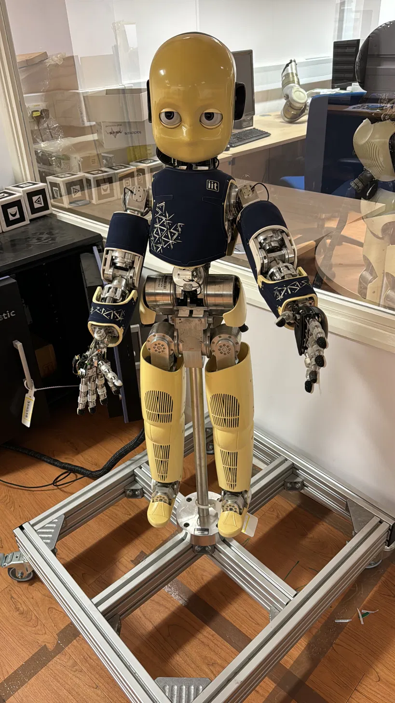
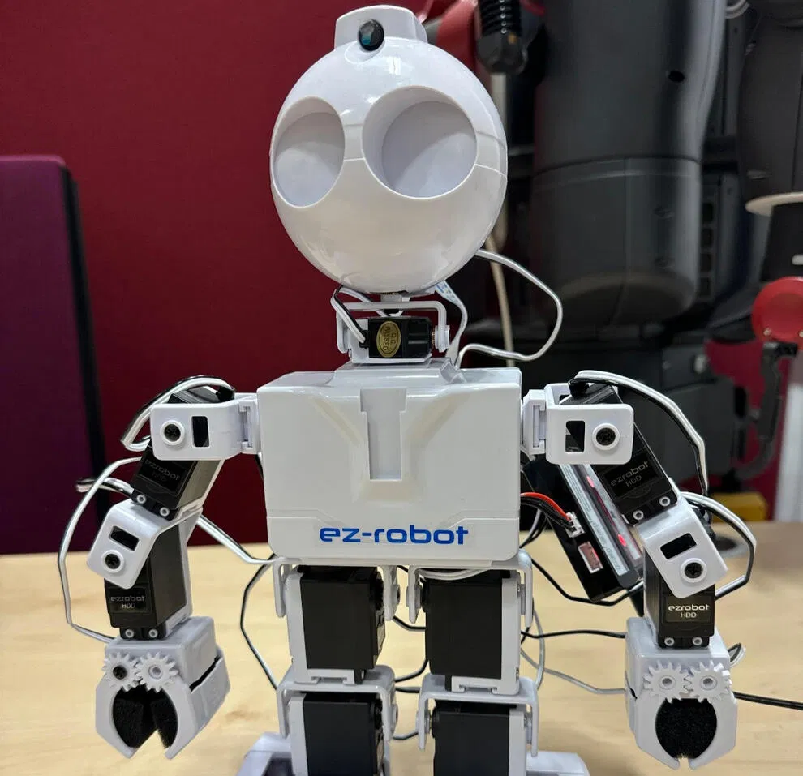
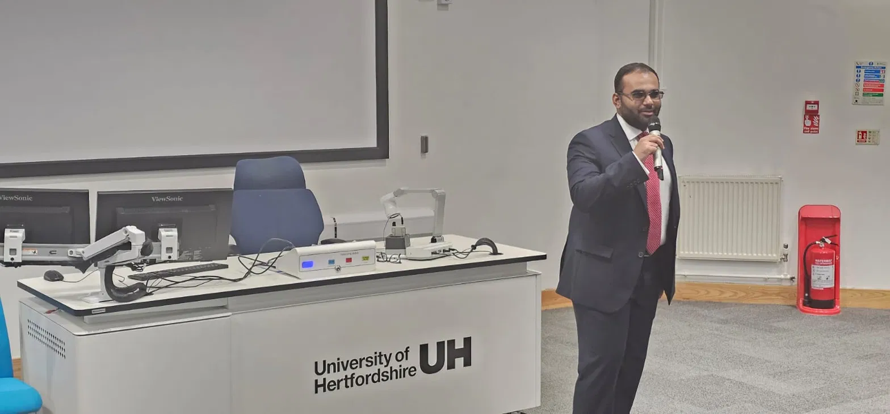
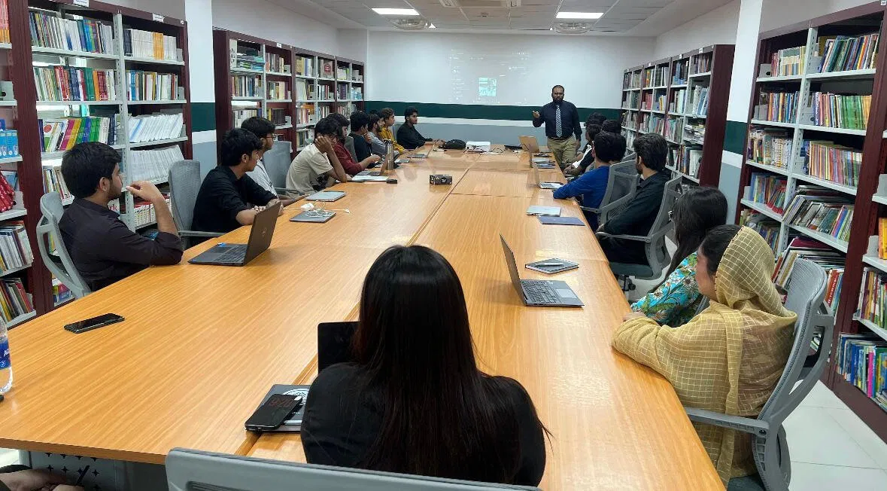

I research and build the systems that let humanoid robots communicate their intentions to people, from sim-to-real pipelines on real hardware to deployed embedded AI. MSc AI & Robotics (Commendation), University of Hertfordshire.
I work at the boundary between robotics research and shipped engineering. My academic work asks how humanoid robots should communicate so that people trust them appropriately, not too little, not too much. My applied work has been building the embedded systems and edge AI pipelines that make robots, and the products around them, actually work in the field.
That combination shapes how I think about every project: a result only matters once it survives contact with real hardware, real users, and conditions nobody designed for in the lab. I bring the same standard to a fresh dataset on a humanoid platform as I do to firmware shipping in a safety-critical product.
I'm currently pursuing PhD research in human-robot interaction and AI reliability, while remaining open to robotics and AI engineering roles where that same standard of rigor is valued.
MSc thesis research, University of Hertfordshire, on how humanoid robots should communicate need-states to build appropriate, calibrated trust.


I built a full sim-to-real pipeline across both the iCub and JD humanoid platforms, developing a high-fidelity Isaac Sim digital twin and engineering the hardware integration for both robots. The formal trust-calibration study, comparing verbal and gestural communication strategies for conveying robot need-states, was conducted on the JD platform with 20 participants in a counterbalanced, RoSAS-validated design.
Verbal communication produced significantly clearer intent conveyance than gestural cues alone, with comparable engagement and warmth across both modalities, evidence that hybrid verbal-gestural strategies are the right design target for companion robots.
Every project here shipped to real hardware with quantified outcomes, not benchmark numbers alone.


Open to PhD research collaboration in HRI and AI reliability, and to robotics and AI engineering roles in the UK, EU, and USA.